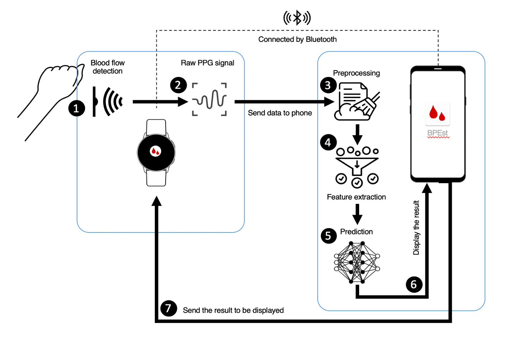

DL-based Blood Pressure Monitoring System
Abstract
This research explores the efficacy of personalized deep learning-based BP estimation systems in several settings. First, we develop an LSTM model for estimating systolic BP (SBP) and diastolic BP (DBP) values from a feature set extracted from electrocardiogram (ECG) and photoplethysmogram (PPG) signals. Although this model could outperform the traditional machine learning models, we came up with a simpler architecture, a deep FCNN model, to estimate BP from a feature set extracted from PPG signal only, which not only performs better but also justify the practicality of an ECG-free system. Second, we introduce a feature engineering-free BP estimation system by utilizing CNN as the automatic feature extraction in our model. This approach is taken to tackle the problem of feature extraction failure due to heavy noises on the signal. Lastly, a real-time BP estimation mobile and watch application is presented in this research, providing feasibility on its development. Overall, this research's findings supported the notion that deep learning techniques used for cuffless BP estimation could enhance and expand existing regression models, open up new research opportunities, and contribute in the building of real-time health monitoring applications.
Video Demo
Credit: Latifa Nabila H
Pipeline

Selected publications